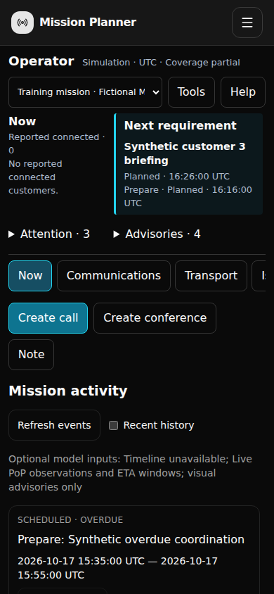
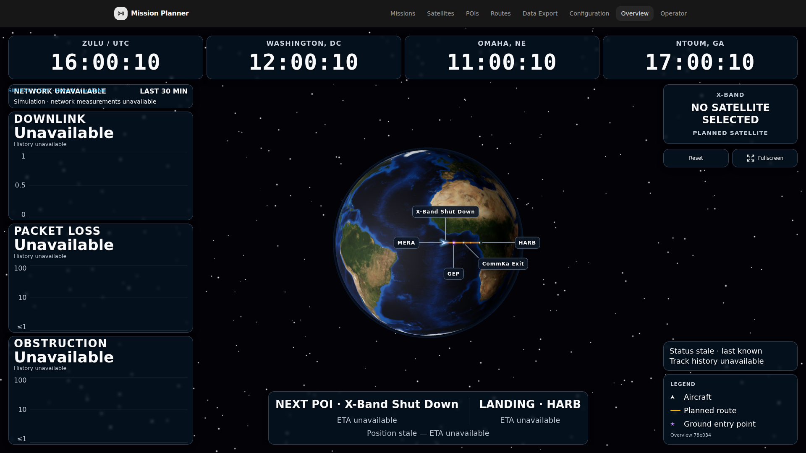
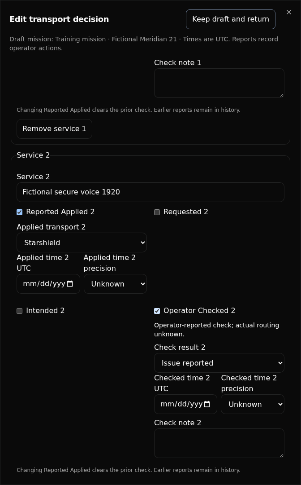
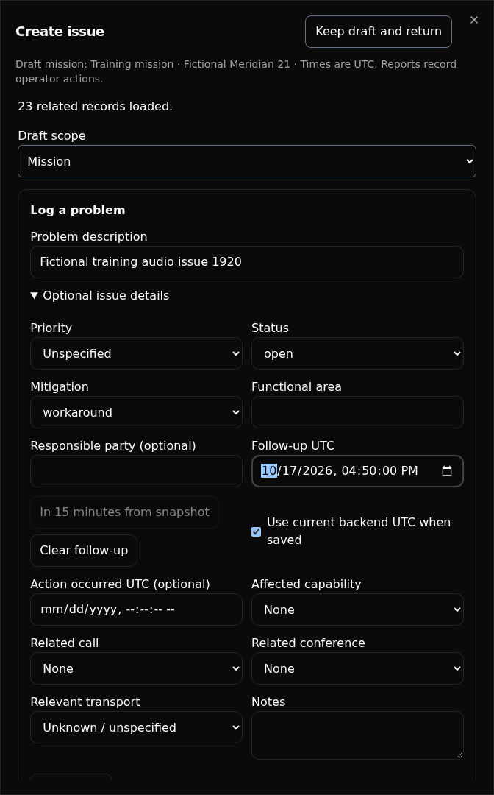
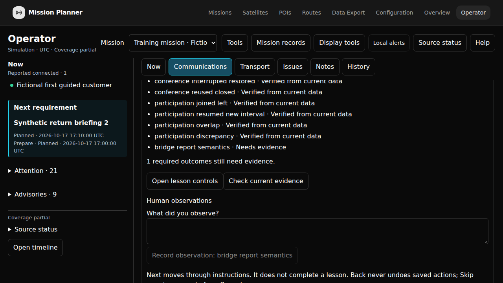

1. Mission, Leg And Zulu Context
Operator follows the active mission and leg automatically in live and simulation modes. Confirm the displayed names and phase. New entries default to that context; parked drafts and existing records keep their original associations. Choose another mission to browse history without changing aircraft activation; Return to active mission resumes following. When nothing is active, choose a mission or create one in Missions.
Normal simulation keeps each mission's journal across legs, replay and backend restart. Historical connections, bridge verification, transport checks and capability reports do not establish current replay readiness. Unfulfilled call requirements and unresolved issues remain actionable. Prior replay reports remain in History. Reestablish the same saved conference definition, then explicitly report establishment and customer joins again. Existing per-run journals are preserved separately and are not automatically merged. A deliberate named evaluation setting starts a fresh journal namespace without deleting the previous one.
The persistent Now area shows customers reported connected. Next shows the next future preparation requirement. An overdue item remains an attention item; it must not replace the future Next requirement. Open the timeline or activity lists to inspect other requirements.
| Control or label | Meaning |
|---|---|
| Mission | Applies across the itinerary. It is not silently tied to the currently displayed leg. |
| Preflight | Preparation before departure. Keep that original scope when reviewing it later. |
| Leg | Applies to the selected named leg. Confirm the leg, not just its list position. |
| Between legs | A ground gap identified by its previous and next named legs. |
| Planned Zulu | A requirement or forecast, not evidence that an action occurred. |
| Actual / reported occurrence Zulu | The time being reported for an action. It can be unknown or approximate. |
| Recorded time | When the backend received the report. It does not fill an unknown occurrence time. |
Enter Zulu using the field's displayed format. A field that says Zulu remains Zulu even if the device uses another time zone. Leave genuinely unknown times unknown; do not enter zero, the current time or a planned time to make a form look complete. A zero preparation lead is a valid deliberate value.

- Next retains the future preparation requirement.
- Attention carries overdue work separately.
- Create call and Create conference remain visible without opening training instructions.
2. First use and workspace controls
- Open Operator from normal navigation. The active mission and leg are selected automatically. If none is active, choose a mission; use Missions to create one if needed.
- If a new enabled installation offers journal initialization, confirm its displayed live or simulation context and use its explicit setup action. An existing or recovery-required store must be recovered rather than reset.
- Use Operations, Transport, Issues, Notes and History for detailed work. The timeline and shared Note, Issue and Schedule actions remain available across sections.
- Open Help for this guide, the quick reference or the private Guided mission walkthrough. Display Controls and Local alerts are in the header; on narrow screens expand Tools.
Editors have their own scrolling body. Use their visible Save control, or Keep draft and return to park work. The workspace retains distinct drafts instead of replacing one unsent note with another. Reopen a retained draft to inspect its pinned mission, scope and record version before saving.
With a keyboard, use Tab and Shift+Tab through controls, Enter or Space to activate the focused control, and the dialog's explicit close/keep action. Closing an editor should return focus to the action that opened it when that action is still available. Saving is a separate explicit action.
3. Plan, complete and recover calls
Create a scheduled requirement
- In Operations choose Schedule. Select an existing conference, Create Conference inline, or choose Direct Connection. Use Reschedule or Cancel Call before a call starts; history remains available.
- Enter the party or participant if known, a planned start Zulu and a status. Scheduled calls require a planned start; a merely planned call does not prove a completed call.
- Expand Timing, association and optional details when needed. Set communications type, planned duration/end, preparation lead, coordinator, conference association and notes using known information.
- Save call. Wait for a confirmed receipt and the saved item before treating it as recorded.
Preparation is derived from the call's planned start and lead. Rescheduling or applying a shift changes planned times; inspect the result before saving. Preserve a deliberate zero lead. Planned duration and actual duration are separate; do not invent an actual start/end from a plan.
Record a completed or unscheduled call
Use Record completed call when reporting an event that already occurred. Enter known actual times and precision; leave unknown actual times unknown. Choose the correct party, scope, leg and optional conference. A completed call can have an unknown actual end. Inspect the saved report in Call history.
Reschedule, cancel, reinstate, remove or restore
Use Edit call to update its planned time or status. Canceled describes the requirement's operational status. Reinstate it by deliberately selecting an appropriate active status and plan; this appends a revision. Remove call record hides the current record from ordinary active lists without deleting its history. Restore record makes a removed record visible again. These are different actions.
Call history shows immutable versions. Review the planned and actual fields, zero lead and optional associations after each change. Loading one page of calls or history does not imply that you have seen the entire mission.
4. Establish And Reuse A Conference
Operations keeps the mission timeline on the left, reusable conferences in the middle, and calls on the right. On phones, use the compact chronology and stacked lanes. Selecting a timeline event focuses its next action without reporting anything.
- Choose Create Conference, or create one inline while scheduling a call. Your full call draft returns with the saved independent conference selected. Direct Connection needs no conference.
- Complete the actual two-way distant-end check: they can hear us and we can hear them. Then choose Establish once. Establish reports the completed check; there is no separate Verify or Test step.
- Choose Connect Customer on the call. Report each customer leaving or interruption independently. Finishing a call keeps the conference available for reuse.
- An eligible idle conference has Close Conference in the same primary slot as Establish. Close is immediate. Resolve active calls and connected or unknown customer reports first; future scheduled calls alone do not prevent Close.
- Close retains the reusable definition, future call associations and all history. Establish explicitly before the next use. Corrections, interruption and record history remain under Conference Details.
Conference history preserves establishment, verification, interruption and closure after its current state changes. Correct conference edits a report; Remove conference record and Restore record affect the record's visibility. A bridge's lifecycle is independent of each customer's presence interval.
5. Report independent customer intervals
- Use Customer Joined or Reuse conference from the relevant conference, or the Communications customer action.
- Enter the participant if known. Select Customer call and Customer conference by name when applicable; either association may be unknown.
- Use Report joined now using backend Zulu only when intentionally reporting a current join. For retrospective or unknown timing, leave that choice off and enter known reported Zulu information under Retrospective timing and correction.
- Save customer interval and check Now. Multiple customers can be reported connected simultaneously; a bridge can serve overlapping calls.
- Report Customer Left for the relevant customer. Interrupt customer reports an interrupted interval. Restore connection creates a distinct resumed interval linked to the earlier one, preserving the original report.
Restoring the bridge does not automatically restore each customer's connection. A resumed customer's new interval is not a rewrite of the old interval. Inspect the call and conference names, participant, state, reported join/leave Zulus and resume link. Keep unknown timing unknown. Resolve discrepancies by recording the actual operations, not by forcing all statuses to agree without evidence.
6. Overview controls, presets and alerts
Overview is the customer-facing operational map. Keep detailed diagnostics, planning and journal work in Operator, Missions or Configuration. Open a separate Overview window when you need to verify that a shared display change actually reaches the display.
Shared switches and a current-view preset
- Open Display Controls, then Show display controls. Shared switches apply to all Overview displays on the installation, including another device. Recenter targets a selected connected window in this browser.
- Configure panel, map, aircraft, link and boundary visibility. Use the shared history window control for the network history lookback.
- In Configuration → Weather, choose radar, METAR, TAF, SIGMET and route filtering, and either wind or temperature visibility. Wind and temperature are mutually exclusive.
- Return to Display presets and choose Save current as Normal, Communications or Weather. Saving a preset does not apply another preset or change the current view.
- Change the view, then Apply the named preset. Verify both settings and the actual connected Overview. A setting can be enabled while its provider data is unavailable.
Presets include weather visibility. They do not include provider credentials/configuration, forecast level/horizon, acknowledgment state, history window or camera position. Older presets contain only panels and map switches; applying one says so. Save the current view again to include weather.
Apply uses separate authoritative settings stores. On an incomplete acknowledgment, read the Confirmed and Unconfirmed groups, review refreshed settings and apply again. A conflicting revision is not permission to overwrite another operator's change silently. An unavailable settings read prevents the new coordinated application from starting. Do not treat a partially acknowledged apply as complete.
During simulation, configured network cards remain visible but measured network values and history are Unavailable. Replay state does not rewrite visibility preferences. Synthetic throughput, latency, loss and obstruction are not presented as measured network performance.
Foreground cues and acknowledgments
Local alerts belong to this browser. Enable supported sound or notification controls using their explicit browser permission/user gesture flow. Read unsupported or denied capability messages. Test an actual cue; clicking enable alone does not prove delivery. There is no promise of background or closed-browser delivery. Acknowledge the current occurrence in the event feed; acknowledgment does not repair a link or change a transport report.

- Only the three configured network cards remain; measured values and history are Unavailable. Two panels were deliberately hidden.
- The operational map and Zulu clocks remain available. Replay does not replace the visibility preference.
7. Flight predictions and advisories
In Missions, preview the intended leg's simulation, choose its supported rate and start it normally. Return to Operator and confirm the current leg, actual replay run, future Next preparation and source freshness. Keep overdue activity visible without losing the future requirement.
X, Ka and PoP inputs are advisories or modeled estimates unless specifically reported as observed. Unknown PoP/location or unknown handover timing does not mean a service outage. Assume Starshield is available unless it is explicitly disabled or deliberately marked down. Transition windows stay map advisories; the agreed full-window planning outage applies where Starshield is the sole usable transport, with usable Ka or coordinated concurrency-only X fallback protecting the plan.
Inspect Source status when data is missing, stale, unavailable or misaligned with the current leg. Do not describe a partial source set as all-clear. Mission outputs are best estimates: uncertainty is not an extra acknowledgment required to save or use a plan. Keep genuine invalid input separate from confidence wording.
During the first leg, open Help → Guided mission walkthrough and choose Check current evidence. Repeat during the second leg, then check again after restarting the private instance. These explicit reads retain the earlier source and journal evidence. A browser reload alone does not establish a backend restart, and a fresh second-leg prediction does not establish first-leg source availability.
8. Transport reports and service checks
- Open Transport and create a transport report for the correct mission scope and optional related call/conference.
- For each service, record intended, requested, applied and checked information only when known. These stages are independent. An applied-only report is valid; do not invent earlier intention or request stages.
- Enter known transport, outcome, Zulu timing, precision and explanatory notes. Save and inspect the recorded report.
- Report service checks independently. A check for one service does not certify all services or establish which path carried another service.
- If the reported applied transport changes, inspect invalidated earlier checks and record a fresh check against the replacement. A historical correction records a correction to the earlier report; it is not another routing action.
Transport decisions are operator reports, not commands to hardware. They do not prove actual routing. Relevant model advisories help the operator assess a decision; unknown times and uncertainty are not automatic blockers. Related call/conference selectors show loaded same-mission records. Load more related records if the target is not in the current page; preserve an unresolved saved association until it is deliberately corrected.

- Reported Applied is independent of Intended and Requested; leave unreported stages unchecked.
- Operator Checked records this service's result. It does not establish actual routing or certify another service.
- Unknown timing remains Unknown. Changing Reported Applied clears the prior check; record a replacement check after reviewing the change.
9. Issues, follow-up and capability
Maintain an issue
- Choose New issue and describe the problem. Add known scope, mitigation and follow-up under Optional issue details.
- Use Add update / follow up to add a new issue message. A changed follow-up or explicit clearing of follow-up must remain distinguishable from leaving it untouched.
- Use Monitor, Resolve or Reopen to report the actual lifecycle. Inspect the resulting status and follow-up; reopening does not invent a new follow-up deadline.
- Open Issue activity to see the immutable messages and transitions. Correct an earlier issue message using its historical correction action and original version. Do not repeat an old lifecycle transition just to fix its wording.
Capability assessments are separate observations. Report functional capability and redundancy independently, including unknown dimensions or unknown observation Zulus. A capability report does not close an issue, prove actual routing or replace a service check. Review the saved dimension values and notes instead of assuming that one known dimension makes the other known.

- Check the pinned scope before saving the issue. Optional details include mitigation and follow-up.
- Follow-up Zulu is separate from action occurrence time and backend save time. Enter it only when known.
- Clear follow-up is deliberate. Later reopening does not recreate a cleared deadline; inspect Issue activity for the immutable changes.
10. Notes, observations and immutable history
Use the shared Note action for text and an occurrence defaulting to the source clock's Now. Use Backdate / Change Occurrence for explicit Zulu date, hour and minute controls. No title or precision choice is required for an ordinary note. Keep Draft And Return preserves text and partial controls; retry retains the chosen occurrence. Existing historical precision, corrections and recorded time remain distinct.
In History, apply the available mission, record, type and scope filters deliberately. Include removed records when auditing removals/restores. Current records and immutable historical revisions are different views. Load further pages until the interface indicates completion; loaded rows are not the whole journal by default. Saved versions retain their provenance and recorded time, including corrections and remove/restore operations.
Author details retain the backend identity and any unverified operator label supplied through the existing API. That optional label is attribution, not a sign-in or authorization claim. Later edits do not rewrite the author on an earlier immutable revision.
If a historical association can no longer be resolved, keep the visible unresolved state until you can deliberately correct it. Do not substitute another mission's record because its name looks similar.
11. Drafts, uncertain saves and conflicts
| State | What to do |
|---|---|
| Unsent draft | Keep draft and return. Switch context and resume it; verify the original pinned target. Editing does not submit it. |
| Saving | Wait for the server acknowledgment. Do not create a replacement just because the display takes time to refresh. |
| Receipt uncertain | The write may have committed. Retain the original pending save. Retry same save replays its frozen body, idempotency key and store epoch. |
| Accepted, current state unreadable | The receipt is evidence of acceptance. Reread the saved state; do not treat this as permission to submit another write. |
| Version conflict / needs review | Reread the actual current version. Compare your retained draft and the counterpart change. Deliberately reconcile and submit a new reviewed revision. |
| Quarantined / changed store | Keep the pending material for recovery. Confirm the installation, namespace and epoch. Never retarget a frozen pending command to a new store. |
| Draft storage unavailable | Keep this tab open and preserve the visible text. Read the explicit storage error. Do not claim that a reload will recover material that could not be stored. |
Offline saving is unavailable while the store cannot be reached. Inputs remain editable so you can retain the draft. Reconnect, reread health and current identity, then resume the original draft. Avoid clearing browser storage or closing the only retained copy during a storage error.
Private parked-draft and offline evidence
- Create a fictional note, keep its intended unknown or reported time, choose Keep draft and return, and use Check current evidence in T08.
- Create another unsent note in the other leg or a different scope. Park it and check again. Resume the first draft and confirm its original target and text. Neither parked draft is a saved record.
- On this private instance only, use your browser developer tools' Network Offline control. Edit the first draft, park it, and check evidence while offline. The guide retains a browser observation but explicitly leaves backend evidence unavailable.
- Turn Offline off. Reload and reopen the guide, then check evidence before further editing. Resume and save the same draft normally, then check again. Credit requires the retained offline and online input plus a later matching backend revision.
Private storage-unavailable exercise
Keep this tab open. On the disposable private instance, this bounded console command fills only the tab's session storage with named exercise keys. It preserves existing drafts and installs its cleanup command before adding keys. Do not run it on an operational instance.
(() => {
const keys = [];
const prefix = 'operator-training-quota:' + crypto.randomUUID() + ':';
window.restorePrivateTrainingStorage = () => {
for (const key of keys) sessionStorage.removeItem(key);
};
for (const size of [65536, 256]) {
for (let i = 0; i < 256; i++) {
const key = prefix + keys.length;
keys.push(key);
try { sessionStorage.setItem(key, 'x'.repeat(size)); }
catch (error) {
if (error.name !== 'QuotaExceededError') throw error;
break;
}
}
}
})();Create a fictional note and read its actual retention error. Park it and check T11 evidence. Do not reload or close the tab. Remove only the exercise filler by running:
restorePrivateTrainingStorage();
delete window.restorePrivateTrainingStorage;Resume the note. Make and undo a small text edit so its original input is now retained durably. Park it and check again, then save normally and check once more. The adapter requires the memory-only and durable registry reads and a later matching saved revision. If any read is missing, the outcome stays incomplete. The exercise does not certify another browser's storage or replace a backup.
In the private lost-receipt exercise, check guide evidence while the command is uncertain before retrying. Then use Retry same save and check evidence again. The guide verifies the real committed backend version observed before the retry, the identical request and its accepted receipt. A network failure before any commit is a different case.
Private counterpart conflict exercise
- Save a fictional note. Open it for editing in your learner window, change its text, and keep that edit unsaved.
- In a second browser profile on the same private instance, open the saved note and save a different text change through Operator.
- Return to the learner window and attempt its old-version save. Read the actual version conflict. Choose Keep draft and return, then Check current evidence in T08 before reconciling.
- Use Reread and reconcile in Save status. Check guide evidence again so the actual current revision is retained.
- Resume the original draft and compare both versions. If its input is the intended replacement, choose Keep my input using current version as base. Save normally and check evidence again.
The conflict outcome requires the real rejected attempt, structured conflict reply, concurrent saved revision, explicit reread and a new accepted replacement command based on that reread. The original and counterpart revisions remain immutable. A conflict label alone, a new key without review, or a different store does not complete it.
Never use a new command key merely to escape an uncertain response. A successful exact retry returns the original result rather than adding another journal version. A genuine second-client conflict requires reading both versions; a fabricated conflict message is not proof of recovery.
12. Ground gap and the next leg
- After the first leg, record any ground-gap note using Between legs and both named leg references.
- In Missions preview and start the next leg normally. Do not assume a completed segment automatically starts another.
- Return to Operator. Verify current-leg source alignment, the new replay segment and the same retained mission journal. Inspect first-leg records without moving their original scope.
- After a private-instance restart, reread journal identity and records. An expired or stopped replay segment is not an exact reconstructed flight frame; preview and start a segment again when appropriate.
13. One mission ZIP and import
- Open the mission's existing Export workflow in Missions. Review itinerary, legs and mission records before preparation.
- Prepare and download the single mission ZIP. Observe actual preparation, cancellation or failure state; a canceled or failed request is not a successful download.
- Extract the original archive. Open the original briefing PDF and inspect the itinerary, leg names, printed time zone and predicted communications windows. Check the included journal/history, telemetry and checksum information using the archive's manifest.
- Use the existing Import workflow in a separate intended destination. For training, create the disposable import destination with the local launcher first. Verify its pre-existing Operator records before and after import.
- Inspect the imported mission and leg outputs. Keep the original ZIP and original PDF as evidence; do not substitute a newly rendered look-alike PDF for the downloaded artifact.
The original customer briefing uses Eastern Time (ET), as printed on its pages. Operator records remain Zulu. Read each artifact's time-zone label; the PDF's predicted posture does not replace the separate reported journal or telemetry archive.
A download is not evidence that somebody reviewed its PDF. Mission import is not Operator backup/restore, and it must not silently replace an existing journal. Report an import validation failure or missing dependency honestly and use the normal retry/cancel path.
Verify the private archive exercise
Cancel a preparation before its first completed download, then retry
through Missions and keep the original ZIP. In a managed cloud
environment, use the launcher's --relay option and
preserve the configured Docker daemon/context. The main training
instance and import destination must be the marked private instances.
Use your existing private root below. Replace
SOURCE_PORT with the printed source port, or replace the
whole origin with the source browser's actual scheme, host and port.
The checker uses the existing backend Python requirements, including
the PDF reader.
operator_training_root=/tmp/operator-learner operator_training_origin=http://127.0.0.1:SOURCE_PORT scripts/operator-training.sh import-start --root "$operator_training_root"
- Open the printed import-destination address. Before importing anything, capture its empty journal baseline:
timeout --kill-after=10s 5m uv run --python 3.11 \ --with-requirements backend/starlink-location/requirements-dev.txt \ python tools/training/operator-mission/archive_evidence.py baseline \ --root "$operator_training_root" --label empty \ --browser-origin "$operator_training_origin"
- Use the destination's normal Missions → Import Mission controls to import the unchanged original ZIP. Then compare it with the baseline:
timeout --kill-after=10s 5m uv run --python 3.11 \ --with-requirements backend/starlink-location/requirements-dev.txt \ python tools/training/operator-mission/archive_evidence.py check \ --root "$operator_training_root" --label empty \ --browser-origin "$operator_training_origin"
-
In the destination's Operator workspace, save a clearly fictional
note. Capture a new baseline with
--label nonempty, re-import the same ZIP through Missions, then runcheckwith--label nonempty. Each check prints its JSON report and original extracted PDF paths. -
Back in the source's T10 guide, select the original browser download
and both generated
archive-evidence-empty.jsonandarchive-evidence-nonempty.jsonfiles. Choose Check selected archive evidence. If the browser is on another computer, transfer the two JSON reports using your normal file manager. - Review the four automatic outcomes labeled Verified from imported tooling evidence. The guide independently hashes the actual selected ZIP and compares the archived source revisions with fresh backend history. Reload and use Check current evidence to revalidate retained facts.
- Open the actual extracted original PDF before recording its human-review observation. Record a client-visible export failure only after observing that failure and its recovery. Cancellation alone does not establish a network failure. These two human observations remain separate from automatic file/journal checks.
- Stop the disposable destination as soon as its exercise finishes:
scripts/operator-training.sh import-stop --root "$operator_training_root"
The checker reads the existing ready server archive and does not
export again, replace a journal or generate a new PDF. The
browser-selected ZIP must have identical bytes. If checking on the
same computer, an optional
--zip /path/to/original.zip selects the original download
directly. Private checker limits are 64 MiB per ZIP and 4 MiB per
report; these do not change the normal Missions export/import
workflow.
14. Private guided mission
Use a separate nonproduction computer/instance. The operational instance has no training mode switch. From the repository create a new empty private root:
scripts/operator-training.sh start --root /tmp/operator-learner
Open the printed address, select Fictional Meridian 21, then choose Help → Guided mission walkthrough. The marked fixture supplies two planned legs and prerequisite calls; the learner must perform the actual operations. It uses existing replay, source, journal and export services.
| Stage | Work and evidence |
|---|---|
| T01 | Identify the private mission, both legs, scope and Zulu. Record your own observation of context. |
| T02 | Create, reschedule, complete, cancel/reinstate and remove/restore calls. Exercise unknown actual times, zero lead and full history. |
| T03 | Establish/verify a bridge, overlap independent customers, interrupt/restore, reuse and close. Explain that the records do not provision hardware. |
| T04 | Verify a connected Overview, presets/weather, groups/history, recenter, supported foreground cues and a real acknowledgment. |
| T05 | Preview/start the first leg at 1×, advance documented checkpoints, inspect actual current-leg X/Ka/PoP inputs and future Next alongside overdue work. |
| T06 | Record applied-only transport, independent checks, a changed application and historical correction. |
| T07 | Maintain issue lifecycle/follow-up/correction and a separate capability assessment. |
| T08 | Retain drafts and original scopes; exercise actual offline, lost-receipt, counterpart conflict and private backup/restore recovery. |
| T09 | Record the ground gap, start the return leg, verify its model sources and restart continuity. |
| T10 | Download/extract the original mission ZIP/PDF and import into the separate destination without replacing its existing journal. |
| T11 | Finish remaining field, pagination, optional-provider, changed-store and storage-failure branches using this reference. |
Next visits instructions; it does not pass a lesson. Back does not undo saved work. Skip stays distinct from Passed. Check current evidence reads authoritative records, complete histories, events and replay state. Missing, stale or unavailable evidence is not all-clear. Human observations are explicitly recorded as such and are separate from machine-verified outcomes. Imported archive reports use a separate “Verified from imported tooling evidence” label after a fresh source-history check; they do not establish human PDF review or an observed client failure.
A flight exercise can retain its original replay and source-read facts after you start the next leg or restart the private instance. These are labeled “Verified from retained source observation”; they describe an earlier check, not current prediction availability. First-leg and second-leg model checks are separate. Changed store/epoch, replaced leg routes, inconsistent reads or a journal boundary older than the recorded observation cannot establish those outcomes. Reset guide progress also clears these local observations.
Open lesson controls takes you to the actual controls and compacts the instructions. Resume guide instructions reopens them. Dismiss guide does not discard drafts or writes. Resume retains the correct private identity; changed store/epoch/mission data is not silently accepted.
Advance the fixture only using its local documented commands, after starting the appropriate replay leg:
scripts/operator-training.sh checkpoint --root /tmp/operator-learner --stage leg-one scripts/operator-training.sh checkpoint --root /tmp/operator-learner --stage leg-one-restriction scripts/operator-training.sh checkpoint --root /tmp/operator-learner --stage between-legs # Preview and start the return leg in Missions before advancing it. scripts/operator-training.sh checkpoint --root /tmp/operator-learner --stage leg-two scripts/operator-training.sh checkpoint --root /tmp/operator-learner --stage postflight
Checkpoints move forward; they do not simulate a learner's saved actions or repair an invalid command. Unknown PoP remains an advisory condition, not proof of an outage.

- Historical connection and participation milestones remain verified.
- The bridge-report understanding outcome still needs a human observation; the lesson remains incomplete.
- Now independently retains a customer reported connected after bridge closure.
15. Restart, reset and maintenance
Private backup and changed-epoch warmup
Do this before starting the first flight. Save a clearly named training note, then make a native backup using the private root and the exact browser origin (scheme, host and port, without a path). Preserve the printed manifest path. Save a second note after the backup. The private lost-receipt exercise can leave that second command uncertain: in T08, choose Arm one note receipt loss, wait for Armed, then create and save the second note within 60 seconds. Its real successful response is withheld once from this tab's journal owner. Keep draft and return; keep its frozen request for the changed-epoch check and do not retry it before restoring. Cancel, expiry or leaving the exercise removes the response interceptor. No backend fault endpoint is installed.
scripts/operator-training.sh journal-check --root /tmp/operator-learner
scripts/operator-training.sh journal-backup --root /tmp/operator-learner --browser-origin http://127.0.0.1:PORT
# Use the exact manifest printed above, after the post-backup note.
scripts/operator-training.sh journal-restore --root /tmp/operator-learner --manifest /app/data/operator/simulation/NAMESPACE/backups/BACKUP.json --browser-origin http://127.0.0.1:PORTThe wrapper stops only this private backend writer, invokes the existing offline restore and integrity check, restarts the backend and prints an evidence JSON path. Reload Operator. Confirm that the first note remains, the later note is absent and the old uncertain request is quarantined with Retry same save disabled. Do not retarget or discard it. In the restored guide, select this JSON under Native recovery report in T08 or T11. Check current evidence revalidates the restored history and retained old request. The tool records maintenance facts; it does not certify a human observation. Without an old uncertain request, backup restoration can be verified while the quarantine outcome remains incomplete.
Restore deliberately creates a new epoch. Earlier guide observations remain associated with the old epoch and are not transferred. Return to T01 after this warmup and conduct the flight lessons in the restored epoch. Do not restore late in the mission to manufacture completion.
Reset guide progress clears only local guide navigation and observations for the current private identity. It does not undo saved mission records. Reset mission provides an explicit local command; the browser does not pretend to reset the instance itself.
scripts/operator-training.sh restart --root /tmp/operator-learner scripts/operator-training.sh import-start --root /tmp/operator-learner scripts/operator-training.sh import-stop --root /tmp/operator-learner scripts/operator-training.sh reset --root /tmp/operator-learner scripts/operator-training.sh stop --root /tmp/operator-learner
Read the reset command's printed successor root and address. Reset retains the old private data and creates a distinct store/namespace with prerequisites only. Open the successor and select its mission; do not retarget old pending commands. Stopping/resetting the parent also stops its owned disposable import destination.
For journal maintenance, use the installation's existing Operator CLI and configured root/mode/namespace. Check integrity and create a verified backup; preserve its manifest. Stop the relevant backend writer before restoring the matching backup. Restore changes the store epoch, so every browser must reread and reconcile retained commands. Never restore into an operational root as a training shortcut. The private fixture's maintenance adapter applies its namespace/clock to that existing CLI; it adds no maintenance HTTP endpoint.
Do not delete a journal, configuration, credentials or a browser's retained drafts to make a setup error disappear. Preserve the explicit error and known store identity for the responsible administrator.
16. Field and failure checklist
- Confirm mission, leg/gap and original scope on every draft and correction.
- Exercise genuinely unknown and approximate occurrence times, valid zero values and optional associations.
- Distinguish a call requirement, bridge state, independent customer presence, applied transport, service check, capability assessment and issue lifecycle.
- Review all immutable revisions, removed/restored records and history pages. Loaded-only coverage remains partial.
- Check source freshness/alignment and optional-provider unavailability without inventing an outage or successful display layer.
- Verify actual connected Overview changes; keep partial preset application visible and recover with current baselines.
- Recover an actual offline draft, committed lost receipt, counterpart version conflict and changed epoch/store. Preserve the original pending request.
- Handle inaccessible browser storage honestly; keep the only unsaved copy open.
- Keep the actual single ZIP, original PDF, checksums and import outcome. Verify the destination's existing journal is unchanged.
- Finish incomplete/skipped branches before treating a private lesson as complete. Automated checks do not replace a first-time person's understanding or device usability.
17. Terms
- Reported connected
- An operator report of customer presence; not a hardware presence detector.
- Conference
- A reusable bridge record with its own establishment, verification, interruption and closure.
- Interval
- A customer's reported period of participation, optionally linked to a call, conference and earlier interrupted interval.
- Receipt
- The backend's accepted command result, including saved versions.
- Exact retry
- A replay of the same frozen command/key/epoch to learn its original result safely.
- Epoch
- A store generation used to fence stale commands, including after restore.
- Immutable history
- Saved record versions retained when later reports, corrections, removals or restores occur.
- Advisory / estimate
- Context to assess a plan, distinct from a reported observed action or a save-validation rule.